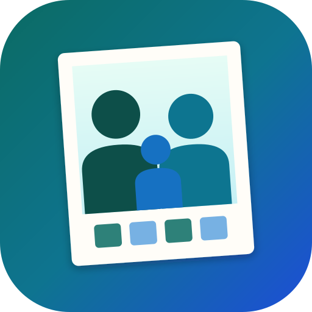
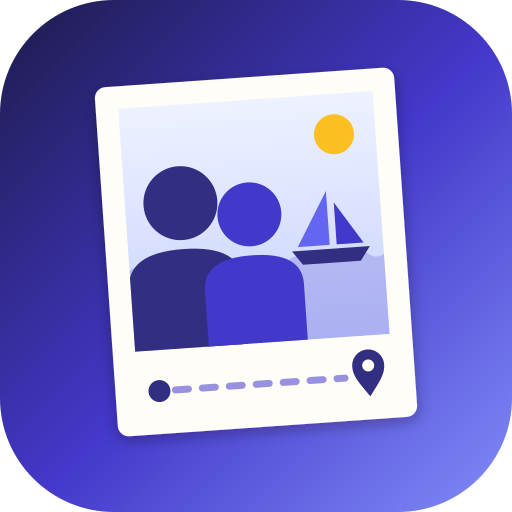

Imagichron
Fotos erzählen
Persönliche Bilder-Zeitreisen für Feste mit Geschichte: Aus den Fotos eines Lebens wird eine Reise durch die Jahre, zum Vorführen beim Geburtstag oder Jubiläum.
Programm für WindowsZu Imagichron
Programme für deine Fotos
Imagicosmos ist das Dach über vier Programmen, die aus Fotos etwas machen: eine Zeitreise, einen Status, ein Album, einen Reisebericht. Jedes hat eine Aufgabe und ist einfach zu bedienen.


Die Programme
Alle beginnen mit „Imagi“ und tragen dasselbe Zeichen in eigener Farbe. Jedes hat seine eigene Seite, alle vier kannst du schon ausprobieren. Manche sind noch in der Testphase.
Fotos erzählen
Persönliche Bilder-Zeitreisen für Feste mit Geschichte: Aus den Fotos eines Lebens wird eine Reise durch die Jahre, zum Vorführen beim Geburtstag oder Jubiläum.
Fotos teilen
Status-Bilder für WhatsApp und Instagram: Aus deinen Fotos und ein paar Worten werden Postkarten, Collagen und Diashows mit Musik, direkt auf dem Handy.
Fotos sammeln und bewahren
Die App „Fotos sichern“ bringt die Fotos deines Handys über das WLAN zu Hause auf deinen eigenen PC, mit Aufnahmeort und auf Wunsch von selbst. Ohne Cloud, ohne Konto. In Arbeit: Fotoalben für die Familie und eine Fotowand für Feiern.
Fotos von Reisen
Reiseberichte, Tag für Tag: für jeden Tag eine Seite mit allen Ereignissen, Fotos und der Route auf der Karte. Unterwegs am Handy festhalten, am PC ausarbeiten, ohne Konto.
Was uns wichtig ist
Die Programme arbeiten auf deinem eigenen Gerät oder verschlüsseln, was sie für dich aufbewahren. Deine Bilder werden nicht ausgewertet und nicht weitergegeben.
Jedes Programm hat eine Aufgabe und führt dich in wenigen Schritten zum Ergebnis, ohne Vorkenntnisse und ohne Handbuch.
In den Programmen und auf dieser Seite gibt es keine Werbung anderer Anbieter und keine Statistik darüber, was du tust.